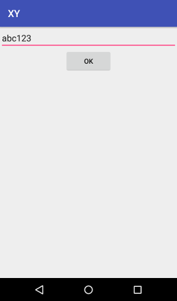
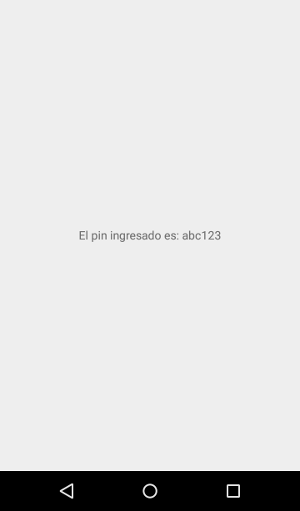
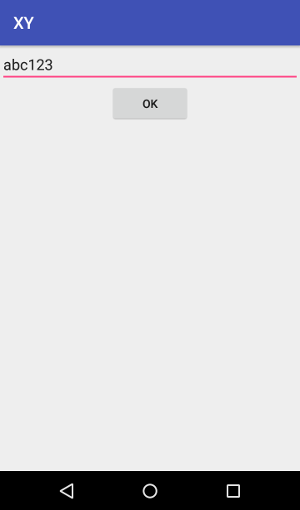
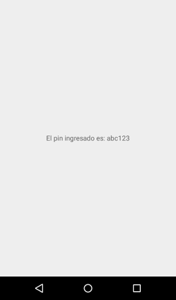

(x,y) parte 2
El código del proyecto lo dividí en 3 directorios, conteniendo las partes más significativas del mismo.
./xy ├── android ├── api └── web
Android
La aplicación es por ahora sólamente un formulario que solicita un PIN existente y lo envía a otro Intent. Es el template para que en la siguiente iteración agregue la comunicación con la API y reporte de errores de la misma.
 

API
Hasta el momento, la API sólo responde de manera simulada el procesamiento de los datos que recibe.
Subjects
- URL: /subjects
Representa a las operaciones relacionadas con las personas o cosas que se desea seguir en la superficie.
~/xy/api$ go run main.go 9090 # terminal 1 ~/xy/api$ curl -i -X POST http://localhost:9090/subjects # terminal 2 HTTP/1.1 201 Created Content-Type: application/json Date: Sun, 09 Jul 2017 22:26:37 GMT Content-Length: 91 {"Current":{"Latitude":0,"Longitude":0,"CreatedAt":"0001-01-01T00:00:00Z"},"History":null}
Registration
- URL: /registration
Es el punto de registro de los dispositivos a seguir. El pin es un valor alfanumérico que se supone ya creado por la misma plataforma y asociado a un usuario existente que quiere agregar ese dispositivo. La operación asocia el mismo con el usuario y provee un ID único para facilitar la entrega de los datos de localización.
~/xy/api$ go run main.go 9090 # terminal 1 ~/xy/api$ curl -i -X POST http://localhost:9090/register --data "pin=1234" # terminal 2 HTTP/1.1 201 Created Content-Type: application/json Date: Sun, 09 Jul 2017 22:29:38 GMT Content-Length: 98 {"success":true,"message":"Successfully created ID.","id":"65336dad-9e7f-4c7a-9f5b-04eeb1a5149c"}
Se hace evidente que /register es un recurso que pertenece a /subjects; lo moveré en la siguiente iteración.
Web
Se configuró el sistema de template nativo de Go (a forma de prueba de concepto) y los paquetes NPM a usar en el futuro: Grunt, Bower.